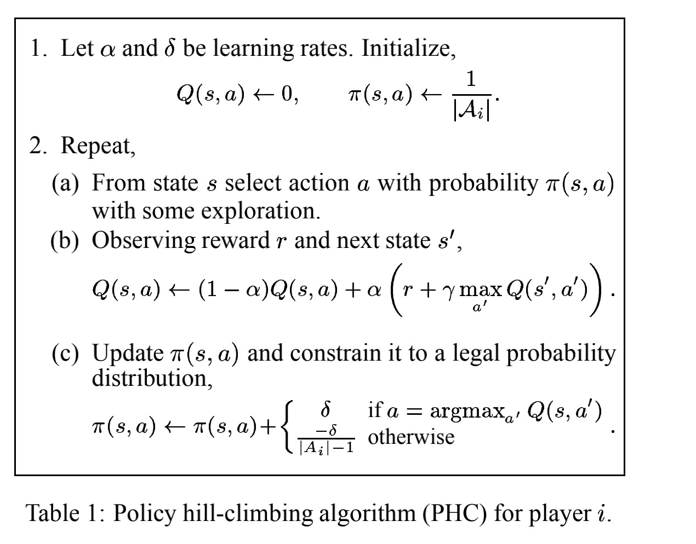
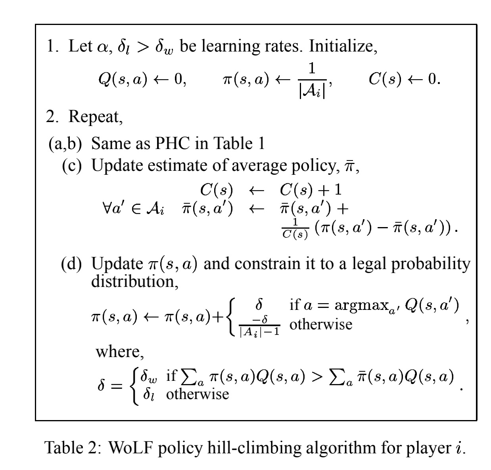

<!DOCTYPE html>
<html xmlns="http://www.w3.org/1999/xhtml" lang="zh" xml:lang="zh">
<head>
  <meta charset="utf-8" />
  <meta name="generator" content="pandoc" />
  <meta name="viewport" content="width=device-width, initial-scale=1.0, user-scalable=yes" />
  <meta name="last_modified" content="2021-02-21T16:54:29Z" />
  <meta name="published" content="Feb 20, 2021" />
  <title>Win or Learn Fast Policy Hill-Climbing(WoLF-PHC)</title>
  <link rel="stylesheet" href="/static/style.css" />
  <link rel="stylesheet" href="/static/syntax-highlighting.css" />
  <style>
      code{white-space: pre-wrap;}
      span.smallcaps{font-variant: small-caps;}
      span.underline{text-decoration: underline;}
      div.column{display: inline-block; vertical-align: top; width: 50%;}
  </style>
  <script src="https://cdn.jsdelivr.net/npm/mathjax@3/es5/tex-chtml-full.js" type="text/javascript"></script>
  <!--[if lt IE 9]>
    <script src="//cdnjs.cloudflare.com/ajax/libs/html5shiv/3.7.3/html5shiv-printshiv.min.js"></script>
  <![endif]-->
  <link rel="icon" href="/static/favicon.ico" type="image/x-icon"/> <link rel="shortcut icon" href="/static/favicon.ico" type="image/x-icon" />
  <meta name="author" content="Yanjie Ze">
  <meta name="viewport" content="width=device-width, initial-scale=1" />
  <script> window.dataLayer = window.dataLayer || []; function gtag(){dataLayer.push(arguments);} gtag('js', new Date());
  gtag('config', 'UA-116308654-1'); </script>
</head>
<body>
<a id="return" href="/">  </a>
<header id="title-block-header">
<h1 class="title">Win or Learn Fast Policy Hill-Climbing(WoLF-PHC)</h1>
<p class="date">Feb 20, 2021</p>
</header>
<p>在论文<strong>Rational and Convergent Learning in Stochastic Games</strong>中，对于multi-agent问题提出了一个新的算法：Win or Learn Fast Policy Hill-Climbing，简称为WoLF-PHC。</p>
<h1 id="一game-theory">一、Game Theory</h1>
<h2 id="stochastic-game">Stochastic Game</h2>
<p><span class="math display">\[
(n, S, A_{1...n},T,R_{1...n})
\]</span></p>
<p><span class="math display">\[
T:S\times A\times S\rightarrow[0,1]
\]</span></p>
<p><span class="math display">\[
R_i: S\times A \rightarrow \mathbb{R}
\]</span></p>
<p><span class="math display">\[
dicount\ factor: \gamma
\]</span></p>
<p>与MDP（Markov Decision Process）不同的地方：多个agent，下一步的state和reward由joint action决定。</p>
<p>博弈论概念：<a href="https://encyclopedia2.thefreedictionary.com/Matrix+Games">Matrix Game</a></p>
<p>两个经典的matrix game：猜硬币（match pennies），石头剪刀布（rock-paper-scissors）。前者为zero-sum SG，后者为general-sum SG。</p>
<p>stochastic game中的每个state可以看做是一个matrix game。</p>
<p>因此SG的框架既包含MDP也包含matrix game。</p>
<h2 id="mixed-policy">Mixed Policy</h2>
<p>agent的policy可以被其他agent利用，因此： <span class="math display">\[
\rho :S\rightarrow PD(A_i)
\]</span> 上式为一个函数，将state映射为agent’s action的probability distribution。下标为agent的编号。</p>
<h2 id="nash-equilibria">Nash Equilibria</h2>
<p>著名的博弈论理论，纳什均衡。</p>
<p>论文中的解释：</p>
<blockquote>
<p>A Nash equilibrium is a collection of strategies for each of the players such that each player’s strategy is a best-response to the other players’ strategies.</p>
<p>So, no player can get a higher payoff by changing strategies given that the other players also don’t change strategies.</p>
</blockquote>
<p>理解纳什均衡：<a href="https://zhuanlan.zhihu.com/p/25781797">通过几个例子理解博弈论与纳什均衡 - 笑虎的文章 - 知乎</a></p>
<h1 id="二motivationtwo-properties">二、Motivation：Two Properties</h1>
<p><strong>Property 1</strong> <em>(Rationality) If the other players’ policies converge to stationary policies then the learning algorithm will converge to a policy that is a best-response to their policies.</em></p>
<p>若其他agent的policy固定下来，一个agent应该有能力学习到最好的policy来应对其他agent。</p>
<p><strong>Property 2</strong> <em>(Convergence) The learner will necessarily converge to a stationary policy. This property will usually be conditioned on the other agents using an algorithm from some class of learning algorithms.</em></p>
<p>agent的policy能够收敛。</p>
<p>结合这两个property，learner就可以收敛到一个最优的固定策略。</p>
<h1 id="三其他reinforcement-learner的不足">三、其他Reinforcement Learner的不足</h1>
<p><strong>Single-Agent Learners</strong>: 满足性质1，不总是满足性质2。</p>
<p><strong>Joint Action Learners</strong>：与Single-Agent一样，rational but not convergent。</p>
<p><strong>Minimax-Q</strong>：convergent but not rational。</p>
<h1 id="四new-algorithm">四、New algorithm</h1>
<h2 id="policy-hill-climbing">Policy Hill Climbing</h2>
<center>

</center>
<p><span class="math display">\[
when \ \delta =1, this\ is\ equivalent\ to \ Q-learning
\]</span></p>
<h2 id="wolf-policy-hill-climbing">WoLF Policy Hill-Climbing</h2>
<p><strong>WoLF principle</strong>: <em>learn quickly while losing and slowly while winning</em></p>
<center>

</center>
<p><span class="math display">\[
\delta_w:winning\ learning\ rate
\]</span></p>
<p><span class="math display">\[
\delta_l: losing\ learning\ rate
\]</span></p>
<p><span class="math display">\[
\delta_w &lt; \delta_l
\]</span></p>
<p>先计算average policy，然后计算总的Q值看看是“win” or “lose”。</p>
<h1 id="五results">五、Results</h1>
<h2 id="matrix-game">Matrix Game</h2>
<p>WoLF效果很好，可以收敛。PHC不能收敛。</p>
<h2 id="gridworld">Gridworld</h2>
<p>WoLF效果很好。</p>
<h2 id="soccer">Soccer</h2>
<p>固定的策略是一定会被击败，因此需要mixed policy。WoLF效果比Minimax-Q好。</p>
<a style="color:black;font-size:2em;float:right;margin-right:30px;margin-bottom:40px;" href="../">[Return to the homepage]</a>
<script>
var code_blocks = document.querySelectorAll("pre.sourceCode");
code_blocks.forEach(function(block) {
  block.classList.add("numberSource");
  block.classList.add("numberLines");
});
</script>
</body>
</html>
